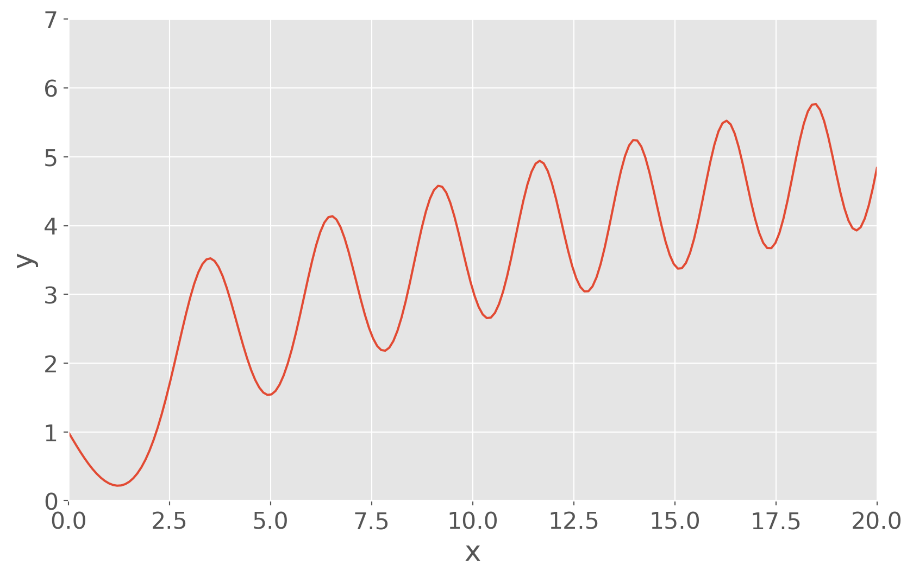
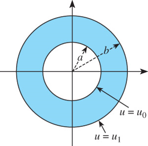
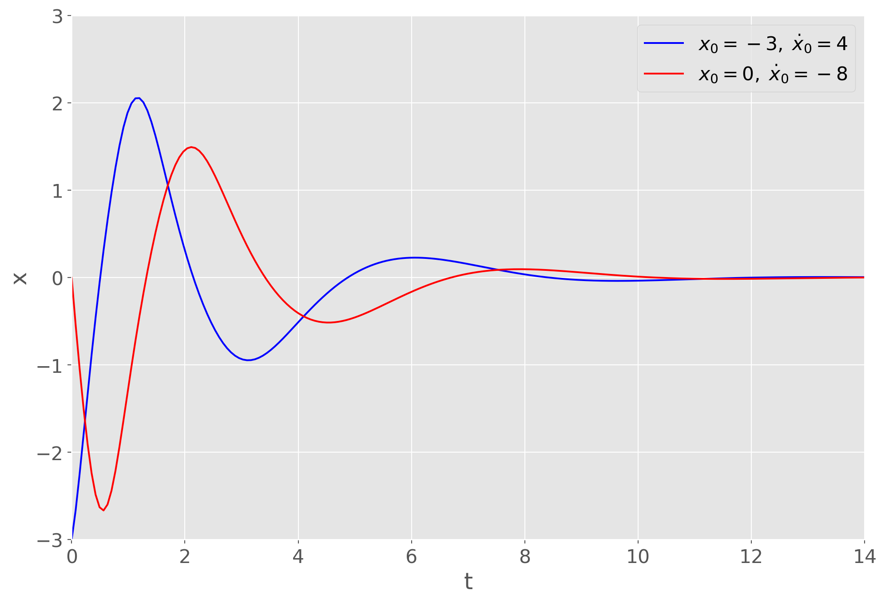
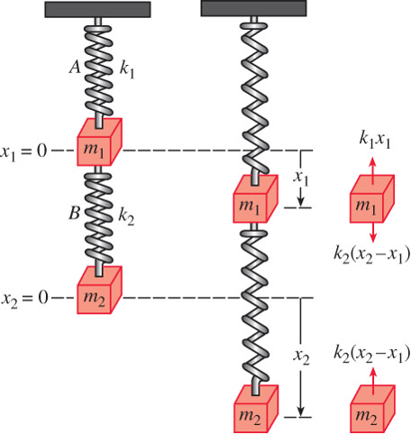
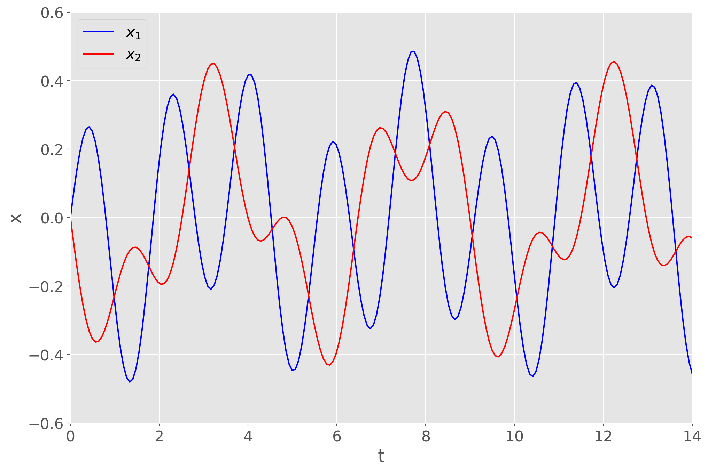

Engineering Mathematics I
Chapter 3. Higher-Order Differential Equations
3.1 Theory of Linear Equations
In an initial-value problem (IVP), we seek a solution \(y(x)\) of a \(n\)th order linear DE so that \(y(x)\) satisfies initial conditions at \(x_0\)
\(n\)th order linear DE: \(\;a_n(x) \neq 0\)
\[\underbrace{a_n(x) \frac{d^ny}{dx^n} +a_{n-1}(x) \frac{d^{n-1}y}{dx^{n-1}} +\cdots + a_1(x) \frac{dy}{dx} +a_0(x) y}_{L(y): ~\mathrm{Linear\;Operator}}= g(x) \]
Initial conditions
\(y(x_0) = y_0, \; y'(x_0) = y_1, \cdots, \; y^{(n-1)}(x_0) = y_{n-1}\)
Boundary-value problem (BVP) consists of solving a linear DE of order 2 or greater, in which the dependent variable \(y\) or its derivatives are specified at different points
For example,
\[a_2(x) \frac{d^2y}{dx^2} +a_1(x) \frac{dy}{dx} +a_0(x)y=g(x)\]
Boundary conditions
\[y(x_0)=y_0, \;y(x_1)=y_1\]
The sum, or superposition , of two or more solutions of a homogeneous linear DE is also a solution
Any set of \(n\) linearly independent solutions \(y_1, y_2, \cdots, y_n\) of the \(n\)th order homogeneous linear DE on interval \(~I\) is a fundamental set of solutions
If two functions are linearly dependent, then one is a constant multiple of the other (otherwise, they are linearly independent)
- If \(\{y_1, y_2, \cdots, y_n\}\) are a set of linearly independent functions, the Wronskian function is not singular:
\[ W(y_1, y_2, \cdots, y_n)= \begin{vmatrix} y_1 & y_2 & \cdots & y_n \\ y_1' & y_2' & \cdots & y_n'\\ \vdots & \vdots & \ddots & \vdots\\ y_1^{(n-1)} & y_2^{(n-1)} & \cdots & y_n^{(n-1)} \end{vmatrix} \neq 0 \]
General solution of \(~n\)th order homogeneous linear DE is
\[y(x)=c_1 y_1(x) +c_2 y_2(x) + \cdots + c_n y_n(x)\]
where \(\,y_1, y_2, \cdots, y_n\,\) is a fundamental set of solutions and \(c_i, \;i=1,2,\cdots,n\;\) are arbitrary constants
General solution of \(n\)th order nonhomogeneous linear DE is
\[y(x)=c_1 y_1(x) +c_2 y_2(x) + \cdots + c_n y_n(x) +y_p(x)\]
where \(\,y_1, y_2, \cdots, y_n\,\) is a fundamental set of solutions, \(\,y_p\) is a particular solution, and \(\,c_i, \;i=1,2,\cdots,n\;\) are arbitrary constants
Example \(\,\) Given that \(\,x(t)=c_1\cos\omega t +c_2 \sin\omega t~\) is the general solution of \(x''+\omega^2x=0~\) on the interval \((-\infty,\infty)\), \(\,\) show that a solution satisfying the initial conditions \(x(0)=x_0\), \(x'(0)=x_1\), is given by
\[x(t)=x_0\cos\omega t+\frac{x_1}{\omega} \sin\omega t\]
Example \(\,\) Determine whether the given set of functions is linearly dependent or linearly independent on the interval \((-\infty,\infty)\)
\[f_1(x)=x, ~f_2(x)=x^2, ~f_3(x)=4x-3x^2\]
\[f_1(x)=5, ~f_2(x)=\cos^2 x, ~f_3(x)=\sin^2 x\]
Example \(\,\) Verify that the given functions form a fundamental set of solutions of the differential equation on the indicated interval. Form the general solution of the equation
\[y''-y'-12y=0; \;\; e^{-3x}, \; e^{4x}, \;\;(-\infty,\infty)\]
\[y''-2y'+5y=0; \;\;e^x \cos 2x, \;\; e^x\sin 2x, \;\;(-\infty,\infty)\]
Example \(\,\) Verify that the given two-parameter family of functions is the general solution of the nonhomogeneous differential equation on the indicated interval
\[y''-7y'+10y=24e^x; \;\;y=c_1 e^{2x} +c_2 e^{5x} +6e^x; \;\;(-\infty,\infty)\]
\[y''-4y'+4y=2e^{2x} +4x-12; \;\;y=c_1 e^{2x} +c_2 xe^{2x} +x^2e^{2x} +x -2; \;\;(-\infty,\infty)\]
3.2 Reduction of Order
- Reduction of order can be used to reduce a linear second-order DE with known solution \(y_1\) into a linear first-order DE, which can be solved for a second solution \(y_2\)
Applying reduction of order \(y_2 = u(x) y_1\) to the standard form of a second-order linear homogeneous DE
\[y''+P(x)y' +Q(x)y=0\]
gives
\[{\scriptsize\begin{align*} y_1 u'' & +\left(2y_1' +P(x)y_1\right) u' = 0\\ &\Downarrow \;\times\, y_1, \; u'=w\\ (y_1^2 w)' &= -(y_1^2 w) P(x) \\ &\Downarrow \\ \color{red}{y_2(x)} &\color{red}{= y_1(x) \int \frac{\exp\left(-\int P(x) \,dx \right)}{y_1^2(x)} \,dx} \end{align*}}\]
Example \(\,\) The indicated function \(y_1(x)\) is a solution of the given equation. Use the reduction of order to find a second solution \(y_2(x)\)
\(y'' -4y' +4y=0; \;\;y_1=e^{2x}\)
\(y''+16y=0; \;\; y_1=\cos 4x\)
\(y''-y=0; \;\; y_1=\cosh x\)
Example \(\,\) The indicated function \(y_1(x)\) is a solution of the associated homogeneous equation. Use the reduction of order to find a second solution \(y_2(x)\) of homogeneous equation and a particular solution \(y_p(x)\) of the given nonhomogeneous equation
- \(y''-4y=2; \;\;y_1=e^{-2x}\)
3.3 Homogeneous Linear Equations with Constant Coefficient
The general solution of \(ay''+by'+cy=0\,\) is found by substituting \(\,y=e^{\,px}\) and solving the resulting characteristic equation \(\,ap^2+bp+c=0\,\) for roots \(\color{red}{p_1}\) and \(\color{red}{p_2}\)
Case I \(~\) \(p_1\) and \(\,p_2\) are real and distinct
\[y = c_1 e^{\color{red}{\,p_1}x} +c_2e^{\color{red}{\,p_2}x}\]
Case II \(~\) \(p_1\) and \(\,p_2\) are real and equal
\[y=c_1 e^{\color{red}{\,p_1}x} +c_2 \color{red}{x}\, e^{\color{red}{\,p_1}x}\]
Case III \(~\) \(p_1\) and \(\,p_2\) are complex conjugate: \(~p_1, p_2 = \color{red}{\alpha} \pm i\color{red}{\beta}\)
\[y=e^{\color{red}{\alpha} x} \left(c_1 \color{blue}{\cos}\color{red}{\beta} x +c_2 \color{blue}{\sin}\color{red}{\beta} x \right)\]
Example: \(~\) Solve \(~y'' +\omega^2y=0\,\) and \(\,y'' -\omega^2y=0\)
Example: \(~\) Solve \(~3y'''+5y''+10y'-4y=0\)
\(\displaystyle \left[ \frac{1}{3}, \ -1 - \sqrt{3} i, \ -1 + \sqrt{3} i\right]\)
Example \(\,\) Find the general solution of the given second-order differential equation
\(4y'' +y'=0\)
\(y''-y'-6y=0\)
\(y'' +8y' +16y=0\)
Example \(\,\) Find the general solution of the given higher-order differential equation
\(y''' -4y'' -5y'=0\)
\(y''' -5y'' +3y' +9y=0\)
Example \(\,\) Solve the initial-value problem
- \(y''' +12y'' +36y'=0, \;\;y(0)=0, \;y'(0)=1, \; y''(0)=-7\)
3.4 Undetermined Coefficients
Method of undetermined coefficients can be used to obtain a particular solution \(y_p\)
- The underlying idea is a conjecture about the form of \(y_p\) based on the kinds of functions making up the input function \(g(x)\)
- Limited to nonhomogeneous linear DEs where
- Coefficients \(a_i\), \(i=1,\cdots,n\), are constants
- \(g(x)\) is a constant, a polynominal function, \(e^{\alpha x}\), \(\sin\beta x\) or \(\cos\beta x\), or finite sums and products of these functions
There are models of \(y_p\) for various functions

Finally, the general solution is obtained from the superposition of \(y_h\) and \(y_p\)

Example: \(~\) Solve \(~y'' +4y = x\cos x\)
If \(g(x)\) consists of a sum of, say, \(m\) terms of the kind listed in the table, \(~\)then the assumption for a particular solution \(y_p\) consists of the sum of the trial forms
If \(\,y_p\) contains terms that duplicate terms in \(y_h\), \(\,\)then that \(y_p\) must be multiplied by \(x^n\), \(~\)where \(n\) is the smallest positive integer that eliminate that duplication
Example: \(~\) Solve \(~y'' -6y' +9y = 6x^2 +2 -12e^{3x}\)
Example: \(~\) Solve \(~y^{(4)}+y'''= 1 -x^2e^{-x}\)
Example \(\,\) Solve the given differential equation by undetermined coefficients
\(y'' +2y' +y=\sin x +3 \cos 2x\)
\(y'' +2y' -24y=16 - (x+2)e^{4x}\)
\(y''' -6y''=3-\cos x\)
Example \(\,\) Solve the given initial-value problem
\(y'' +4y=-2, \;\;y(\pi/8)=1/2, \;\;y'(\pi/8) = 2\)
\(5y'' +y'=-6x, \;\;y(0)=0, \; y'(0)=-10\)
\(\displaystyle \frac{d^2 x}{dt^2} +\omega^2x=F_0 \sin\omega t, \;\; x(0)=0, \;x'(0)=0\)
3.5 Variation of Parameters
The method of variation of parameters can be used with linear higher-order DEs
- This method always yields a \(y_p\) provided the homogeneous equation can be solved
- This method is not limited to the types of input functions constraining the method of undetermined coefficients
To adapt the method of variation of parameters to a linear second-order DE
\[a_2(x)y'' +a_1(x)y' +a_0(x)y = g(x),\]
we put the above equation in the standard form
\[y'' +P(x)y' +Q(x)y = f(x)\]
To solve,
- Find the homogeneous solutions \(y_1\), $ y_2$
Seek a particular solution of the form
\[y_p = \color{red}{u_1(x)} \color{blue}{y_1} +\color{red}{u_2(x)} \color{blue}{y_2}\]
\[\tiny \begin{align*} y_p''+P(x)y_p' &+Q(x)y_p = f(x)\\ &\Downarrow y_p = u_1 y_1 +u_2 y_2 \\ \frac{d}{dx}[\color{blue}{y_1 u_1' +y_2 u_2'}] +P(x) [\color{blue}{y_1 u_1' +y_2 u_2'}] +\color{red}{y_1' u_1'} &+\color{red}{y_2' u_2'}= f(x) \\ &\Downarrow \;\; \text{let } y_1 u_1' +y_2 u_2' =0, \; \text{then } y_1' u_1' +y_2' u_2'= f(x) \\ \color{red}{\begin{bmatrix} y_1 & y_2\\ y_1' & y_2' \end{bmatrix} \begin{bmatrix} u_1' \\ u_2' \end{bmatrix}} &= \color{red}{\begin{bmatrix} 0 \\ f(x) \end{bmatrix}} \\ &\Downarrow \end{align*}\]
\[\tiny \begin{align*} &\Downarrow \\ \color{blue}{u_1 = \displaystyle\int \frac{W_1}{W\;} \,dx =-\int \frac{y_2}{W}\,f(x)\,dx}, \;\; \color{blue}{u_2} &\color{blue}{= \displaystyle\int \frac{W_2}{W\;} \,dx =\int \frac{y_1}{W}\,f(x)\,dx}\\ \\ \mathrm{where} \;\; W = \begin{vmatrix} y_1 & y_2\\ y_1' & y_2' \end{vmatrix}, \; W_1 =& \begin{vmatrix} 0 & y_2\\ f(x) & y_2' \end{vmatrix}, \; W_2 = \begin{vmatrix} y_1 & 0\\ y_1' & f(x) \end{vmatrix} \end{align*}\]
Example: \(~\) Solve \(~y'' -y = \frac{1}{x}\)
The method can be generalized to the standard form of \(n\)th order linear DE. \(~\)A particular solution is
\[y_p = u_1(x) y_1 +u_2(x) y_2 +\cdots +u_n(x) y_n\]
where
\[u_k = \displaystyle\int \frac{W_k}{W\;}\, dx, \;k=1, 2, \cdots, n\]
Example \(\,\) Solve each differential equation by variation of parameters
\(y'' +y=\sec x\)
\(y'' +y=\sin x\)
\(y'' +y=\cos^2 x\)
\(3y''-6y'+6y=e^x \sec x\)
Example \(\,\) Solve each differential equation by variation of parameters subject to the initial conditions \(y(0)=1, \;y'(0)=0\)
\(4y'' -y=xe^{x/2}\)
\(y''-2y'+y=e^x \sec^2 x\)
\(y'' +2y' -8y=2e^{-2x} -e^{-x}\)
Example \(\,\) Solve each differential equation by variation of parameters subject to the initial conditions \(y(0)=1, \;y'(0)=0\)
\(y''-4y=\frac{e^{2x}}{x}\)
\(2y'' +2y' +y=4\sqrt{x}\)
3.6 Cauchy-Euler Equation
The Cauchy-Euler equation is a linear DE of the form
\[\displaystyle a_n \color{red}{x^n} \frac{d^n y}{dx^n} +a_{n-1} \color{red}{x^{n-1}} \frac{d^{n-1} y}{dx^{n-1}} +\cdots +a_1 \color{red}{x} \frac{dy}{dx} +a_0 y = g(x)\]
where \(a_n, a_{n-1}, \cdots, a_0\) are constants and the exponent of the coefficient matches the order of differentiation
\(\color{red}{y =x^{\,p}}\) is a solution of second order Cauchy-Euler equation whenever \(p\) is a solution of the auxiliary equation
\[a_2 p^2 +(a_1 -a_2)p +a_0 =0\]
Case I: \(~\) Distinct Real Roots, \(~p_1, \,p_2\)
\[ y = c_1 x^{\color{red}{\,p_1}} +c_2 x^{\color{red}{\,p_2}} \]
Case II: \(~\) Repeated Real Roots, \(~p_1=p_2\)
\[y = c_1 x^{\color{red}{\,p_1}} +c_2 x^{\color{red}{\,p_1}} \color{red}{\ln x}\]
Case III: \(~\) Complex Conjugate Roots, \(~p_1, p_2 = \color{red}{\alpha} \pm i\color{red}{\beta}\)
\[y = x^{\color{red}{\alpha}} \left[ c_1 \color{blue}{\cos} (\color{red}{\beta\ln x)} + c_2 \color{blue}{\sin} (\color{red}{\beta\ln x}) \right]\]
Example: \(~\) Solve \(~x^2y'' -3xy' +3y = 2x^4 e^x\)
Example \(\,\) Solve the given differential equation
\(x^2y''-2y=0\)
\(xy''+y'=0\)
\(x^2y''+xy'+4y=0\)
Example \(\,\) Solve the given differential equation by variation of parameters
\(xy''-4y'=x^4\)
\(x^2y''+xy'-y=\ln x\)
3.7 Nonlinear Equations
- Nonlinear equations do not possess superposability
Example: \(~\) Verify that \(y_1\) and \(y_2\) are solutions of the given DE but that \(c_1 y_1 +c_2 y_2\) is, in general, not a solution
\[\left(y''\right)^2 = y^2,\; y_1=e^x,\; y_2=\cos x\]
- The major difference between linear and nonlinear DEs of order two or higher lies in the realm of solvability. Nonlinear higher-order DEs virtually defy solution. This means that there are no analytical methods whereby either an explicit or implicit solution can be found
- There are still things that can be done; \(~\)we can always analyze a nonlinear DE qualitatively and numerically
- Nonlinear second-order DEs \(F(x, y', y'')=0~\) and \(F(y, y', y'')=0\,\) can be reduced to a first-order equation by means of the substitution \(u=y'\) and can sometimes be solved using first-order methods
Example: \(~\) Solve \(~y''=2x(y')^2\) and \(yy''=(y')^2\)
- In some instances, a solution of a nonlinear IVP can be approximated by a Taylor series centered at \(x_0\)
Example: \(~\)Solve \(~y''=x +y -y^2\), \(\,y(0)=-1\), \(\,y'(0)=1\) by using
\[y(x) = y(0) +\frac{y'(0)}{1!}x +\frac{y''(0)}{2!}x^2 +\frac{y'''(0)}{3!} x^3 + \cdots\]
- In order to analyze an \(n\)th order IVP numerically, \(~\)we express the \(n\)th order ODE as a system of \(n\) first-order equations
- For example, \[\begin{align*} \frac{d^2y}{dx^2} = f(x,y,y')&, \;\;y(x_0)=y_0, \;y'(x_0) = y_1\\ ~ &\Downarrow {\tiny y'=u}\\ \mathrm{Solve:} &\; \begin{cases} y' = u \\ u' = f(x,y,u) \end{cases}\\ \mathrm{subject \;to:} & \;y(x_0)=y_0, \;u(x_0)=y_1 \end{align*}\]
Example \(~\) Solve the following equation numerically:
\[\begin{align*} \frac{d^2 y}{dx^2} = x &+y -y^2, \;\; y(0)=-1, \;y'(0)=1\\ &\Downarrow \\ y' &= u\\ u' &= x +y -y^2 \\ y(0) &=-1 \\ u(0) &=1 \end{align*}\]
import numpy as np
from scipy.integrate import solve_ivp
import matplotlib.pyplot as plt
plt.style.use('ggplot')
plt.rcParams.update({'font.size': 16})
def func(t, y):
return [y[1], t +y[0] -y[0]*y[0]]
sol = solve_ivp(func, [0, 20], [1, -1], t_eval=np.linspace(0, 20, 200))
plt.figure(figsize=(10, 6))
plt.plot(sol.t, sol.y[0])
plt.axis((0, 20, 0, 7))
plt.xlabel('x')
plt.ylabel('y')
plt.show()
Example \(\,\) The dependent variable \(y\) is missing in the given differential equation. Solve the equation by using the substitution \(u=y'\)
\[y''+(y')^2+1=0\]
Example \(\,\) The independent variable \(x\) is missing in the given differential equation. Solve the equation by using the substitution \(u=y'\)
\[yy''+(y')^2+1=0\]
Example \(\,\) Consider the initial-value problem
\[y''+yy'=0,\;\;y(0)=1,\;y'(0)=-1\]
Use the DE and a numerical solver to graph the solution curve
Find an explicit solution of the IVP. \(~\)Use a graphing utility to graph this solution
Find an interval of definition for the solution in part b
Example \(\,\) Show that the substitution \(u=y'\) leads to a Bernoulli equation. Solve this equation
\[xy''=y'+(y')^3\]
3.8 Linear Models: Initial-Value Problems
Several dynamical systems are modeled with linear 2nd-order DEs with constant coefficients and initial conditions at \(t_0\)
- Spring/Mass Systems
- Free Undamped Motion
- Free Damped Motion
- Driven Motion
\[\begin{align*} m\frac{d^2x}{dt^2} &= -kx -\beta\frac{dx}{dt} +f(t)\\ x(0) &= x_0 \\ \dot{x}(0) &= x_1 \end{align*}\]

Example \(\,\) Show that the solution of the initial-value problem
\[\frac{d^2x}{dt^2}+\omega^2x=F_0\cos\gamma t, \;x(0)=0, \;x'(0)=0\]
is \(~\displaystyle x(t)=\frac{F_0}{\omega^2-\gamma^2}(\cos\gamma t -\cos\omega t)\)
- Evaluate \(\displaystyle \lim_{\gamma \to \omega} \frac{F_0}{\omega^2-\gamma^2} (\cos\gamma t - \cos\omega t)\)
3.9 Linear Models: Boundary-Value Problems
Example: \(~\) Temperature in a Ring

The temperature \(u(r)\) in circular ring is determined from the boundary-value problem
\[r\frac{d^2 u}{dr^2} +\frac{du}{dr}=0,\; u(a)=u_0,\; u(b)=u_1\]
3.10 Greens Functions
We shall consider the self-adjoint form
\[ \color{red}{\frac{d}{dx} \left[ p(x)\frac{du}{dx} \right] +q(x)u = -f(x)} \qquad(1)\]
The function \(p(x)\) is continuously differentiable and positive, and \(q(x)\) and \(f(x)\) are continuous for \(\alpha < x < \beta\)
The homogeneous second-order differential equation
\[ \frac{d}{dx} \left[ p(x)\frac{dv}{dx} \right] +q(x)v = 0 \qquad(2)\]
has exactly two linearly independent solutions \(v_1(x)\) and \(v_2(x)\): any solution of (Equation 2) can be written in the form
\[v(x) = c_1 v_1(x) +c_2 v_2(x)\]
where \(c_1\) and \(c_2\) are constants
We now consider the function
\[\scriptsize w(x) = v_1(x) \color{blue}{\int_\alpha^x v_2(\xi) f(\xi)\, d\xi} -v_2(x) \color{blue}{\int_\alpha^x v_1(\xi) f(\xi)\, d\xi}\]
Differentiating \(w\), \(~\)we have
\[\scriptsize\begin{align*} \frac{dw}{dx} &= v_1'(x) \int_\alpha^x v_2(\xi) f(\xi)\, d\xi -v_2'(x) \int_\alpha^x v_1(\xi) f(\xi)\, d\xi + \underbrace{\left[ v_1(x) v_2(x) -v_2(x) v_1(x) \right]}_{=0} f(x)\\ &= v_1'(x) \int_\alpha^x v_2(\xi) f(\xi)\, d\xi -v_2'(x) \int_\alpha^x v_1(\xi) f(\xi)\, d\xi \end{align*}\]
Then
\[\tiny \begin{align*} \frac{d}{dx}\left[ p(x)\frac{dw}{dx} \right] &= \underbrace{\frac{d}{dx}\left[ p(x)v_1'(x) \right]}_{-q(x)v_1} \int_\alpha^x v_2(\xi) f(\xi)\, d\xi -\underbrace{\frac{d}{dx}\left[ p(x)v_2'(x) \right]}_{-q(x) v_2} \int_\alpha^x v_1(\xi) f(\xi)\, d\xi \\ &+ \underbrace{p(x) \left[ v_1'(x) v_2(x) -v_2'(x) v_1(x) \right]}_{-K} f(x) \\ &=-q(x) w -Kf(x) \end{align*}\]
where
\[\tiny\begin{align*} \frac{d}{dx} &\left\{p(x) \left[ v_1'(x) v_2(x) -v_2'(x) v_1(x) \right] \right\} \\ &= \underbrace{\frac{d}{dx} \left[ p(x) v_1'(x) \right]}_{-q(x) v_1(x)} v_2(x) -\underbrace{\frac{d}{dx} \left[ p(x) v_2'(x) \right]}_{-q(x)v_2(x)} v_1(x) +p(x)v_1'(x)v_2'(x) -p(x)v_2'(x)v_1'(x) = 0 \\ &\Downarrow \\ K & \text{ is constant} \end{align*}\]
We have shown that \(w\) satisfies the equation:
\[\frac{d}{dx} \left[ p(x)\frac{dw}{dx} \right] +q(x)w = -Kf(x)\]
Moreover, \(~\)as \(x \rightarrow \alpha\)
\[w(\alpha)=w'(\alpha)=0\]
Dividing by the constant \(K\), \(~\)we find that the function
\[\scriptsize u(x) = \int_\alpha^x R(x,\xi)\,f(\xi)\,d\xi \qquad(3)\]
where
\[\tiny \color{blue}{R(x,\xi)=\frac{v_1(x)v_2(\xi) - v_2(x)v_1(\xi)}{K}} =-\frac{v_1(x)v_2(\xi) - v_2(x)v_1(\xi)}{p(x) \left[ v_1'(x) v_2(x) -v_2'(x) v_1(x) \right]} \qquad(4)\]
is the solution of the initial value problem
\[\scriptsize\begin{align*} \frac{d}{dx} \left[ p(x) \frac{du}{dx}\right] +qu &= -f(x)\;\; \text{ for } x > \alpha \\ u(\alpha) = u'(\alpha) &= 0 \end{align*}\]
Since the denominator of \(\,R(x,\xi)\) is a constant, \(~\)the function \(R(x,\xi)\) satisfies the homogeneous equation (Equation 2) as either a function of \(x\) or \(\xi\). In fact,
\[R(x,\xi)=-R(\xi,x)\]
For a fixed value of \(\xi\), \(~R(x,\xi)\) is completely characterized as the solution of the homogeneous initial value problem
\[\begin{align*} \frac{d}{dx} \left[ p(x) \frac{dR}{dx}\right] &+q(x)R = 0\;\; \text{ for } x > \xi \\ \left. R \right|_{x=\xi} &= 0 \\ \left. R' \right|_{x=\xi} &= -\frac{1}{p(\xi)} \\ \end{align*}\]
- The function \(R(x,\xi)\) describes the influence on the value of \(u\) at \(x\) of a disturbance(impulse) concentrated at \(\xi\). It is sometimes called the influence function, or the one-sided Greens function
- If the values of \(u(\alpha)\) and \(u'(\alpha)\) are prescribed to be other than zero, \(~\)we must simply add a suitable solution \(c_1 v_1(x) +c_2 v_2(x)\) to the expression (Equation 3)
Example \(~\) Consider the problem
\[\begin{align*} u'' +u &= -f(x)\;\; \text{ for } x > 0 \\ u(0) &= 1 \\ u'(0) &=-1 \\ \end{align*}\]
Solution \(~u(x) = w(x) +v(x)\)
(1) \(~w(x)\)
\[\begin{align*} w'' +w &= -f(x)\;\; \text{ for } x > 0 \\ w(0) &= 0 \\ w'(0) &= 0 \\ \end{align*}\]
For a fixed value of \(\xi\), \(~\)the influence function \(R(x,\xi)\) satisfies
\[\scriptsize\begin{align*} \frac{d^2R}{dx^2} +R &= 0\;\; \text{ for } x > \xi \\ \left. R \right|_{x=\xi} &= 0 \\ \left. R' \right|_{x=\xi} &= -1 \end{align*}\]
Thus \(~R(x,\xi)=\sin(\xi -x)\,\) and the solution is
\[w(x)=\int_0^x \sin(\xi -x)\,f(\xi)\,d\xi\]
(2) \(~v(x)\)
\[\begin{align*} v'' +v &= 0\;\; \text{ for }\, x > 0\;\; \\ v(0) &= 1 \\ v'(0) &=-1 \\ \end{align*}\]
\[\begin{align*} &\Downarrow \\ v(x)&=\cos x -\sin x \end{align*}\]
- Here, we research a two-point boundary value problem:
\[\begin{align*} \frac{d}{dx} \left[ p(x)\frac{du}{dx} \right] +q(x)u &= -f(x)\;\; \text{ for } \alpha < x < \beta \\ \color{blue}{u(\alpha)=u(\beta)}&\color{blue}{=0} \end{align*} \qquad(5)\]
Writing the general solution in the form
\[u(x) = \int_\alpha^x R(x,\xi)\,f(\xi)\,d\xi +c_1 v_1(x) +c_2 v_2(x)\]
we obtain the two equations
\[\begin{align*} c_1 v_1(\alpha) +c_2 v_2(\alpha) &= 0\\ c_1 v_1(\beta) +c_2 v_2(\beta) &= -\int_\alpha^\beta R(\beta,\xi)\,f(\xi)\,d\xi \end{align*}\]
These two equations determine a unique pair of constants \(c_1\) and \(c_2\), provided the determinant of their coefficients is not zero; \(~\)that is, provided
\[D \equiv v_1(\alpha)v_2(\beta)-v_2(\alpha)v_1(\beta) \neq 0\]
We assume this for the moment. Then
\[\begin{align*} c_1 &= \frac{v_2(\alpha)}{D} \int_\alpha^\beta R(\beta,\xi)\,f(\xi)\,d\xi \\ &=\frac{v_2(\alpha)}{D} \int_\alpha^x R(\beta,\xi)\,f(\xi)\,d\xi +\frac{v_2(\alpha)}{D} \int_x^\beta R(\beta,\xi)\,f(\xi)\,d\xi\\ c_2 &= -\frac{v_1(\alpha)}{D} \int_\alpha^\beta R(\beta,\xi)\,f(\xi)\,d\xi \\ &= -\frac{v_1(\alpha)}{D} \int_\alpha^x R(\beta,\xi)\,f(\xi)\,d\xi -\frac{v_1(\alpha)}{D} \int_x^\beta R(\beta,\xi)\,f(\xi)\,d\xi \end{align*}\]
The solution can then be written as
\[\begin{align*} u(x) &= \int_\alpha^x \left[ R(x,\xi) +\frac{v_2(\alpha)v_1(x) -v_1(\alpha)v_2(x)}{D} R(\beta,\xi) \right]\,f(\xi)\,d\xi\\ &+\int_x^\beta \frac{v_2(\alpha)v_1(x) -v_1(\alpha)v_2(x)}{D} R(\beta,\xi)\,f(\xi)\,d\xi \end{align*}\]
We find after some algebraic manipulation that
\[\tiny\begin{align*} G(x,\xi) &=R(x,\xi) +\frac{v_2(\alpha)v_1(x) -v_1(\alpha)v_2(x)}{D} R(\beta,\xi) \\ &= \frac{v_1(x)v_2(\xi) - v_2(x)v_1(\xi)}{K} \frac{D}{D} +\frac{v_2(\alpha)v_1(x) -v_1(\alpha)v_2(x)}{D} \frac{v_1(\beta)v_2(\xi) - v_2(\beta)v_1(\xi)}{K}\\ &= \frac{\left[v_1(\alpha)v_2(\xi) -v_2(\alpha)v_1(\xi)\right] \left[v_1(x)v_2(\beta) -v_2(x)v_1(\beta) \right]}{KD}\;\;\text{ for } \xi \leq x \end{align*}\]
\[\tiny\begin{align*} G(x,\xi) &=\frac{v_2(\alpha)v_1(x) -v_1(\alpha)v_2(x)}{D} R(\beta,\xi) \\ &= \frac{\left[v_1(x)v_2(\alpha) -v_2(x)v_1(\alpha)\right] \left[v_1(\beta)v_2(\xi) -v_2(\beta)v_1(\xi) \right]}{KD}\;\;\text{ for } x \leq \xi \end{align*}\]
Then the solution of the two-point boundary value problem (Equation 5) can be written in the form
\[u(x)=\int_\alpha^\beta G(x,\xi)\,f(\xi)\,d\xi \qquad(6)\]
The function \(G(x,\xi)\) is called the Greens function of the problem (Equation 5). It is symmetric. That is
\[G(x,\xi)=G(\xi,x)\]
To determine the Greens function, we note that for each \(\xi\) it satisfies the following boundary value problem
\[\begin{align*} \frac{d}{dx} \left[ p(x) \frac{dG}{dx}\right] &+q(x)G = 0\;\; \text{ for } x \neq \xi \\ \left. G \right|_{x=\alpha} &= \left. G \right|_{x=\beta}=0 \\ \left. G \right|_{x=\xi+0} &-\left. G \right|_{x=\xi -0}=0 \\ \left. G' \right|_{x=\xi+0} &-\left. G' \right|_{x=\xi-0}=-\frac{1}{p(\xi)} \\ \end{align*}\]
Example \(~\) Consider the problem
\[\begin{align*} u'' &= -f(x)\;\; \text{ for}\; 0 < x < 1\\ u(0) &= 0 \\ u(1) &= 0 \\ \end{align*}\]
Solution
\[\tiny\begin{align*} G''= 0 \;&\Rightarrow \; G = ax+b\\ &\Downarrow {\scriptstyle G|_{x=0} = G|_{x=1}=0} \\ G(x,\xi) &= \begin{cases} a_1(\xi)\, x& \text{ for } x < \xi \\ a_2(\xi)(1-x)& \text{ for } x > \xi \end{cases}\\ &\Downarrow {\scriptstyle G(x,\xi)=G(\xi,x)}\\ a_1(\xi)&= A(1 -\xi) \\ a_2(\xi)&=A\xi \\ &\Downarrow {\scriptstyle \left. G' \right|_{x=\xi+0} -\left. G' \right|_{x=\xi-0}=-1}\\ -A\xi -A(1 -\xi) &=-1 \rightarrow A = 1 \\ &\Downarrow \\ G(x,\xi) &= \begin{cases} (1-\xi) x& \text{ for } x \leq \xi \\ \xi(1-x)& \text{ for } x \geq \xi \end{cases} \end{align*}\]
The solution is \(\scriptsize\displaystyle u(x)= \int_0^x \xi(1-x)\,f(\xi)\,d\xi +\int_x^1 (1-\xi)x \,f(\xi)\,d\xi\)
Two-point boundary value problems with more general boundary conditions can be treated in the same manner. We consider the problem
\[\scriptsize\begin{align*} \frac{d}{dx} &\left[ p(x)\frac{du}{dx} \right] +q(x)u = -f(x)\;\; \text{ for } \alpha < x < \beta \\ -&\mu_1 u'(\alpha) +\sigma_1 u(\alpha)=0 \\ &\mu_2 u'(\beta) +\sigma_2 u(\beta)=0 \end{align*} \qquad(7)\]
The Greens function \(G(x,\xi)\) is derived as before, provided the condition
\[\tiny D\equiv \left[ -\mu_1 v_1'(\alpha) +\sigma_1v_1(\alpha)\right]\left[ \mu_2 v_2'(\beta) +\sigma_2v_2(\beta)\right] -\left[ -\mu_1 v_2'(\alpha) +\sigma_1v_2(\alpha)\right]\left[ \mu_2 v_1'(\beta) +\sigma_2v_1(\beta)\right]\neq0\]
is satisfied
The Greens function \(G(x,\xi)\) is the solution of the problem
\[\begin{align*} \frac{d}{dx} \left[ p(x) \frac{dG}{dx}\right] &+q(x)G = 0\;\; \text{ for } x \neq \xi \\ -\mu_1\left. G' \right|_{x=\alpha} &+\sigma_1 \left. G\right|_{x=\alpha} = \mu_2\left. G' \right|_{x=\beta} +\sigma_2\left. G \right|_{x=\beta}=0 \\ \left. G \right|_{x=\xi+0} &- \left. G \right|_{x=\xi -0}=0 \\ \left. G' \right|_{x=\xi+0} &-\left. G' \right|_{x=\xi-0}=-\frac{1}{p(\xi)} \\ \end{align*}\]
It still satisfies the symmetry relation \(G(x,\xi)=G(\xi,x)\)
Example \(~\) Consider the problem
\[\begin{align*} u'' &= -f(x)\;\; \text{ for }\, 0 < x < 1\\ u(0) &= 0 \\ u'(1) +\sigma_2 u(1)&= 1 \\ \end{align*}\]
Solution \(~u(x) = w(x) +v(x)\)
(1) \(~w(x)\)
\[\begin{align*} w'' &= -f(x)\;\; \text{ for } 0 < x < 1\\ w(0) &= 0 \\ w'(1) +\sigma_2 w(1)&= 0 \\ \end{align*}\]
\[\tiny\begin{align*} G''&= 0\\ &\Downarrow \\ G &= ax+b\\ &\Downarrow {\scriptstyle G|_{x=0} \,=\, G'|_{x=1} \,+\,\sigma_2 G|_{x=1}\,=\,0} \\ G(x,\xi) &= \begin{cases} a_1(\xi)\, x& \text{ for } x < \xi \\ a_2(\xi)\left[1+\sigma_2(1 -x)\right]& \text{ for } x > \xi \end{cases}\\ &\Downarrow {\scriptstyle G(x,\xi)\,=\,G(\xi,x)}\\ a_1(\xi)&= A\left[1 +\sigma_2(1 -\xi)\right] \\ a_2(\xi)&=A\xi \\ &\Downarrow {\scriptstyle \left. G' \right|_{x=\xi+0} \,-\,\left. G' \right|_{x=\xi-0}\,=\,-1}\\ A\xi\cdot-\sigma_2 -A\left[1 +\sigma_2(1 -\xi)\right] &=-1 \rightarrow A = \frac{1}{1+\sigma_2} \\ \end{align*}\]
\[\begin{align*} &\Downarrow \\ G(x,\xi) &= \begin{cases} \frac{\left[ 1+\sigma_2(1 -\xi)\right]\,x}{1+\sigma_2} & \text{ for } x \leq \xi \\ \frac{\xi \,\left[ 1+\sigma_2(1 -x)\right]}{1+\sigma_2} & \text{ for } x \geq \xi \end{cases} \end{align*}\]
The solution is
\[\scriptsize w(x)= \int_0^x \frac{\xi \,\left[ 1+\sigma_2(1 -x)\right]}{1+\sigma_2}\,f(\xi)\,d\xi +\int_x^1 \frac{\left[ 1+\sigma_2(1 -\xi)\right]\,x}{1+\sigma_2} \,f(\xi)\,d\xi\]
(2) \(~v(x)\)
\[\begin{align*} v'' &= 0\;\; \text{ for }\, 0 < x < 1\\ v(0) &= 0 \\ v'(1) +\sigma_2 v(1)&= 1 \\ \end{align*}\]
\[\begin{align*} &\Downarrow \\ v(x)&=\frac{x}{1+\sigma_2} \end{align*}\]
3.11 Nonlinear Models
Example: \(~\) Use a numerical solver to obtain the solution curves satisfying the given initial conditions:
\[\frac{d^2 x}{dt^2} +\frac{dx}{dt} +x +x^3 = 0\]
\[x(0)=-3,\; \dot{x}(0)=4,\; \text{ or }\; x(0)=0,\; \dot{x}(0)=-8\]

3.12 Solving System of Linear Equations
When physical systems are coupled, the mathematical model of the system usually consists of a set of coupled DEs

\[\begin{align*} m_1 \ddot{x}_1 &=-k_1 x_1 +k_2 (x_2 -x_1) \\ m_2 \ddot{x}_2 &=-k_2 (x_2 -x_1) \end{align*}\]
Linear systems with constant coefficients can be solved by uncoupling the system into distinct linear ODEs in each dependent variable
Example: \(~\) Solve the above equation under the assumption that \(k_1=6\), \(k_2=4\), \(m_1=1\), and \(m_2=1\) subject to
\[x_1(0)=0,\; x'_1(0)=1,\; x_2(0)=0,\; x'_2(0)=-1\]
